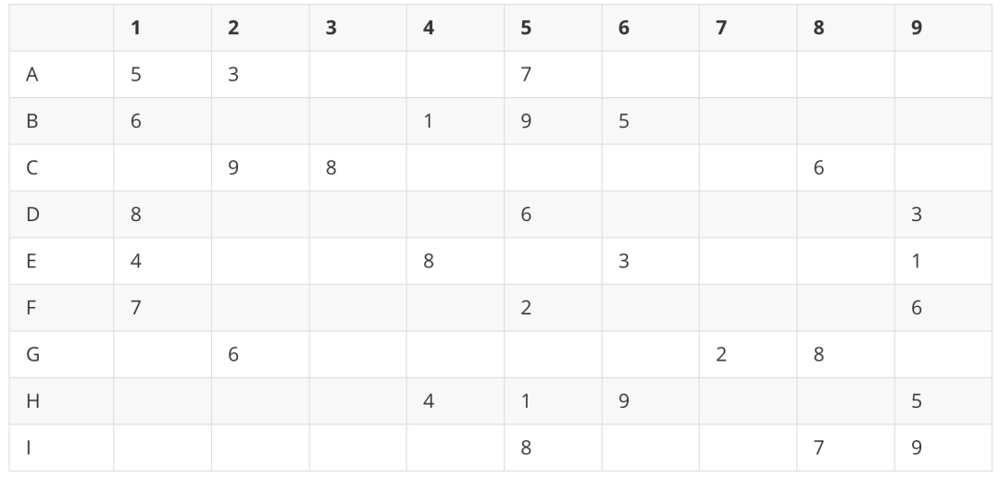

前几天和隔壁邻居玩斗地主被发现了，牌被没收了，斗地主是斗不了了，但我还想和邻居玩耍。如果你还想斗斗地主，戳：趁老王不在，和隔壁邻居斗斗地主，比比大小
想破脑袋终于让我想到一个游戏，数独！什么叫数独？数独就是可以让我趁老王不在的时候和隔壁邻居一起玩耍的游戏！
1、数字 1-9 在每一行只能出现一次。
2、数字 1-9 在每一列只能出现一次。
3、数字 1-9 在每一个 3x3 宫内只能出现一次。3x3 的宫内为A1-C3,A4-C6,A7-C9,D1-F3,D4-F6,D7-F9...

1、数独我们使用一个二维列表存储,没有值的位置我们使用''空字符窜占位。（二维数组）
2、得到每一个3*3的宫内,每一行，每一列已有的数据，然后存放起来。3、得到所有的空缺位置，再遍历空缺位置，尝试放置数据，然后进行判断，如果满足条件安继续放置下一个。以此类推，在途中有不满足条件的情况，就进行回溯，返回上一次满足条件的情况，在进行另一次尝试。
1、首选我们创建一个类SudoKu。编写构造函数。
class SudoKu():
def __init__(self,sudo_ku_data):
# 判断传入的数独是否满足格式
if not isinstance(sudo_ku_data,list):
raise TypeError(f'sudo_ku_data params must a list, but {sudo_ku_data} is a {type(sudo_ku_data)}')
if len(sudo_ku_data) != 9 or len(sudo_ku_data[0]) != 9:
raise TypeError(f'sudo_ku_data params must a 9*9 list, but {sudo_ku_data} is a {len(sudo_ku_data)}*{len(sudo_ku_data[0])} list')
self.sudo_ku = sudo_ku_data
# 存放每一行已有的数据
self.every_row_data = {}
# 每一列已有的数字
self.every_column_data = {}
# 每一个3*3宫内有的数字
self.every_three_to_three_data = {}
# 每一个空缺的位置
self.vacant_position = []
# 每一个空缺位置尝试了的数字
self.every_vacant_position_tried_values = {}2、编写添加每一行，每一列，每一宫方法，方便我们后面调用
def _add_row_data(self,row,value):
'''
添加数据到self.every_row_data中,即对每一行已有的数据进行添加
:param row:
:param value:
:return:
'''
# 如果当前行不存在，就以当前行为key，初始化值为set()（空的集合）
if row not in self.every_row_data:
self.every_row_data[row] = set()
# 如果这个值已经出现过在这一行了，说明传入的不是一个正确的数独
if value in self.every_row_data[row]:
raise TypeError(f'params {self.sudo_ku} is a invalid SudoKu')
self.every_row_data[row].add(value)
def _add_column_data(self,column,value):
'''
添加数据到self.every_column_data中,上面的函数思路一样
:param column:
:param value:
:return:
'''
if column not in self.every_column_data:
self.every_column_data[column] = set()
if value in self.every_column_data[column]:
raise TypeError(f'params {self.sudo_ku} is a invalid SudoKu')
self.every_column_data[column].add(value)
def _get_three_to_three_key(self,row,column):
'''
得到该位置在哪一个3*3的宫内
:param row:
:param column:
:return:
'''
if row in [0,1,2]:
if column in [0,1,2]:
key = 1
elif column in [3,4,5]:
key = 2
else:
key = 3
elif row in [3,4,5]:
if column in [0,1,2]:
key = 4
elif column in [3,4,5]:
key = 5
else:
key = 6
else:
if column in [0,1,2]:
key = 7
elif column in [3,4,5]:
key = 8
else:
key = 9
return key
def _add_three_to_three_data(self,row,column,value):
'''
添加数据到self.every_three_to_three_data中
:param row:
:param column:
:param value:
:return:
'''
# 首先得到在哪一个3*3的宫内
key = self._get_three_to_three_key(row,column)
# 然后也和上面添加行，列的思路一样
if key not in self.every_three_to_three_data:
self.every_three_to_three_data[key] = set()
if value in self.every_three_to_three_data[key]:
raise TypeError(f'params {self.sudo_ku} is a invalid SudoKu')
self.every_three_to_three_data[key].add(value)3、遍历数独，对每种数据进行初始化
def _init(self):
'''
根据传入的数独，初始化数据
:return:
'''
for row,row_datas in enumerate(self.sudo_ku):
for column,value in enumerate(row_datas):
if value == '':
# 添加空缺位置
self.vacant_position.append( (row,column) )
else:
# 添加行数据
self._add_row_data(row,value)
# 添加列数据
self._add_column_data(column,value)
# 添加宫数据
self._add_three_to_three_data(row,column,value)4、编写判断某一个位置的值是否合法的函数
def _judge_value_is_legal(self,row,column,value):
'''
判断方放置的数据是否合法
:param row:
:param column:
:param value:
:return:
'''
# value是否存在这一行数据中
if value in self.every_row_data[row]:
return False
# value是否存在这一列数据中
if value in self.every_column_data[column]:
return False
# value是否存在这个3*3的宫内
key = self._get_three_to_three_key(row,column)
if value in self.every_three_to_three_data[key]:
return False
return True5、编写计算的函数，在当前位置循环 可以使用的额数据，确定可以是否可以放置这个值
def _calculate(self, vacant_position):
'''
计算，开始对数独进行放置值
:param vacant_position:
:return:
'''
# 得到当前位置
row,column = vacant_position
values = set(range(1,10))
# 对当前为位置创建一个唯一key,用来存放当前位置已经尝试了的数据
key = str(row) + str(column)
# 如果这个key存在，就对values进行取差集，因为两个都是集合（set），直接使用-就行了
if key in self.every_vacant_position_tried_values:
values = values - self.every_vacant_position_tried_values[key]
# 如果这个key不存在，就创建一个空的集合
else:
self.every_vacant_position_tried_values[key] = set()
for value in values:
# 对当前数据添加到当前位置尝试过的的数据中
self.every_vacant_position_tried_values[key].add(value)
# 如果当前value合法，可以放置
if self._judge_value_is_legal(row,column,value):
print(f'set {vacant_position} value is {value}')
# 更新 判断数据合法时 需要使用到的数据
self.every_column_data[column].add(value)
self.every_row_data[row].add(value)
key = self._get_three_to_three_key(row,column)
self.every_three_to_three_data[key].add(value)
# 修改这个位置的值为value
self.sudo_ku[row][column] = value
# 返回True 和填充的 value
return True,value
return False,None6、如果当前位置没有任何一个值可以放置，那么就回溯，返回上一次成功的位置，重新取值,所以我们编写一个回溯函数
def _backtrack(self,current_vacant_position,previous_vacant_position,previous_value):
'''
回溯
:param current_vacant_position: 当前尝试失败的位置
:param previous_vacant_position: 上一次成功的位置
:param previous_value:上一次成功的值
:return:
'''
print(f"run backtracking... value is {previous_value},vacant position is {previous_vacant_position}")
row,column = previous_vacant_position
# 对上一次成功的值从需要用到的判断的数据中移除
self.every_column_data[column].remove(previous_value)
self.every_row_data[row].remove(previous_value)
key = self._get_three_to_three_key(row,column)
self.every_three_to_three_data[key].remove(previous_value)
# 并且上一次改变的的值变回去
self.sudo_ku[row][column] = ''
# 对当前尝试失败的位置已经城市失败的的值进行删除，因为回溯了，所以下一次进来需要重新判断值
current_row,current_column = current_vacant_position
key = str(current_row) + str(current_column)
self.every_vacant_position_tried_values.pop(key)7、到这里为止，我们所有的功能函数都写完了，然后我们编写一个函数，开始循环所有的空缺位置。然后进行计算。
def get_result(self):
'''
得到计算之后的数独
:return:
'''
# 首先初始化一下数据
self._init()
# 空缺位置的长度
length = len(self.vacant_position)
# 空缺位置的下标
index = 0
# 存放已经尝试了的数据
tried_values = []
# 如果index小于length,说明还没有计算完
while index < length:
# 得到一个空缺位置
vacant_position = self.vacant_position[index]
# 计入计算函数，返回是否成功，如果成功，value为成功 的值，如果失败，value为None
is_success,value = self._calculate(vacant_position)
# 如果成功，将value放在tried_values列表里面，因为列表是有序的.
# index+1 对下一个位置进行尝试
if is_success:
tried_values.append(value)
index += 1
# 失败，进行回溯,并且index-1，返回上一次的空缺位置，我们需要传入当前失败的位置 和 上一次成功的位置和值
else:
self._backtrack(vacant_position,self.vacant_position[index-1],tried_values.pop())
index -= 1
# 如果index<0 了 说明这个数独是无效的
if index < 0:
raise ValueError(f'{self.sudo_ku} is a invalid sudo ku')
# 返回计算之后的数独
return self.sudo_ku呼。。。终于干完代码，接下来我们呢可以"开始收获"了
if __name__ == '__main__':
sudo_ku_data = [
[5,3,'','',7,'','','',''],
[6,'','',1,9,5,'','',''],
['',9,8,'','','','',6,''],
[8,'','','',6,'','','',3],
[4,'','',8,'',3,'','',1],
[7,'','','',2,'','','',6],
['',6,'','','','',2,8,''],
['','','',4,1,9,'','',5],
['','','','',8,'','',7,9],
]
# 得到计算好的数独
sudo_ku = SudoKu(sudo_ku_data).get_result()
print(sudo_ku)
################
# 结果显示 #
################
[5, 3, 4, 6, 7, 8, 9, 1, 2]
[6, 7, 2, 1, 9, 5, 3, 4, 8]
[1, 9, 8, 3, 4, 2, 5, 6, 7]
[8, 5, 9, 7, 6, 1, 4, 2, 3]
[4, 2, 6, 8, 5, 3, 7, 9, 1]
[7, 1, 3, 9, 2, 4, 8, 5, 6]
[9, 6, 1, 5, 3, 7, 2, 8, 4]
[2, 8, 7, 4, 1, 9, 6, 3, 5]
[3, 4, 5, 2, 8, 6, 1, 7, 9]这效果就很完美啊，我们在来测试一个比较难得数独。
输入数独为：
[
[8, '', '', '', '', '', '', '', 4],
['', 2, '', '', '', '', '', 7, ''],
['', '', 9, 1, '', 6, 5, '', ''],
['', '', 6, 2, '', 8, 9, '', ''],
['', 9, '', '', 3, '', '', 4, ''],
['', '', 2, 4, '', 7, 8, '', ''],
['', '', 7, 9, '', 5, 6, '', ''],
['', 8, '', '', '', '', '', 2, ''],
[6, '', '', '', '', '', '', '', 9],
]
################
# 结果显示 #
################
[8, 6, 1, 5, 7, 2, 3, 9, 4]
[5, 2, 4, 3, 8, 9, 1, 7, 6]
[3, 7, 9, 1, 4, 6, 5, 8, 2]
[4, 3, 6, 2, 5, 8, 9, 1, 7]
[7, 9, 8, 6, 3, 1, 2, 4, 5]
[1, 5, 2, 4, 9, 7, 8, 6, 3]
[2, 4, 7, 9, 1, 5, 6, 3, 8]
[9, 8, 5, 7, 6, 3, 4, 2, 1]
[6, 1, 3, 8, 2, 4, 7, 5, 9]哈哈哈哈哈，以后还有谁能够和我比解数独。膨胀.jpg
代码已全部上传至Github：https://github.com/MiracleYoung/You-are-Pythonista/tree/master/PythonExercise/App/solveSudoku/xujin
更多好玩有趣的Python尽请关注「Python专栏」